反编译java代码问题
此处整理，JEB反编译java代码方面的问题：
批量反编译全部java代码
用默认超时设置会导致最后由于超时而被中断停止
- 问题：在批量反编译全部代码最后报错
- 弹框：
Decompilation completed. Errors occurred+ Logger日志中显示错误原因：decompilation timed-out: External interruption- 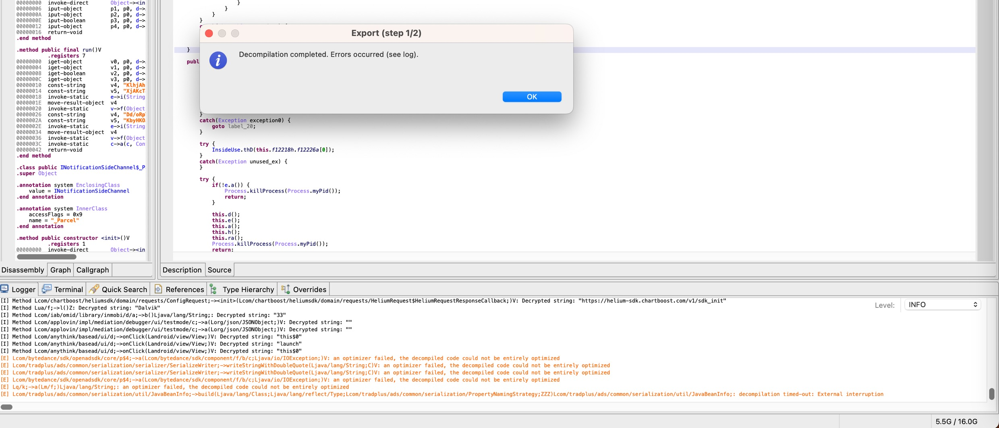
- 弹框：
- 原因：JEB默认的超时设置太短了：
- 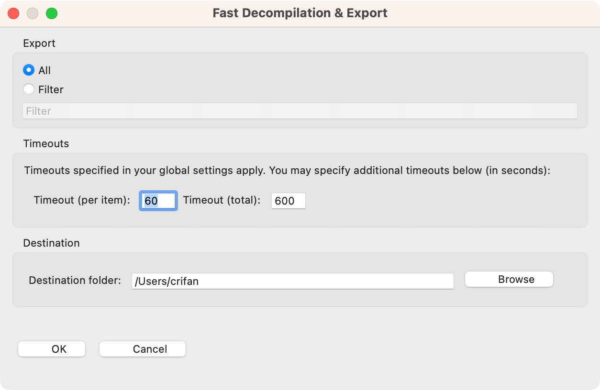
- Timeout per item:
60=1分钟 - Timeout total:
600=10分钟
- Timeout per item:
- 而此处要反编译的内容较多，耗时比较久，超过了10分钟的总时长超时限制，因此中断退出
- 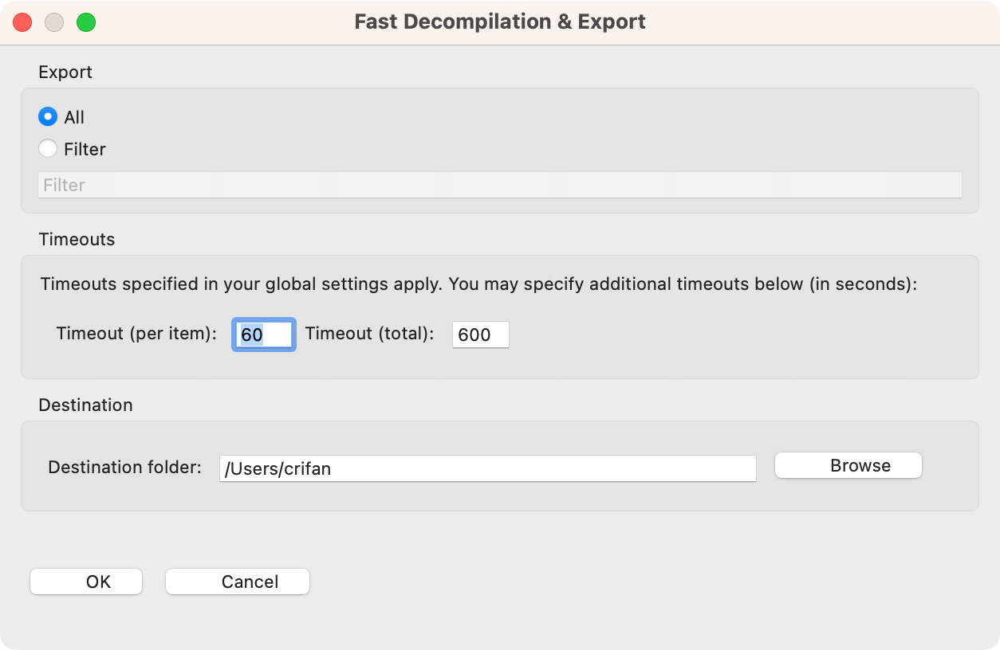
- 解决办法：增大超时方面的设置
- 比如
- 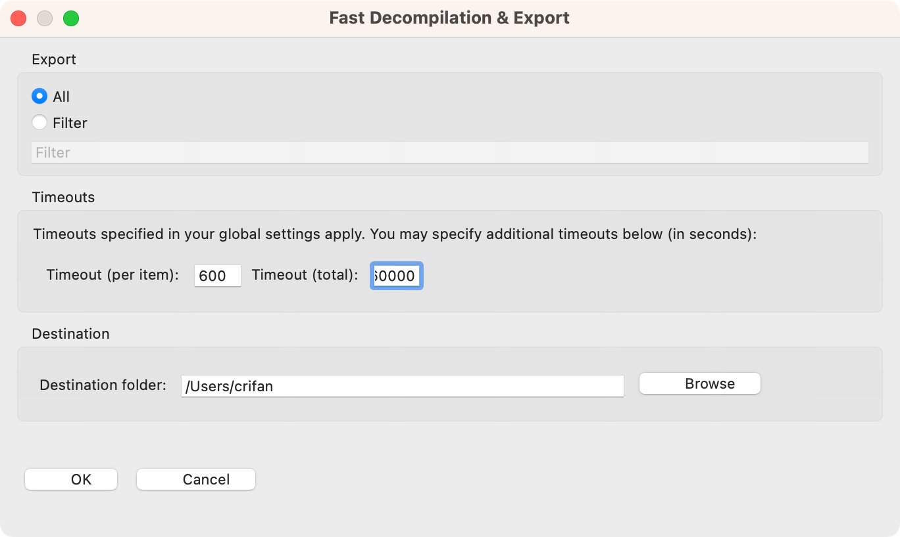
- Timeouts:
- Timeout per item:
600=10分钟 - Timeout total:
60000=100分钟
- Timeout per item:
- Timeouts:
- 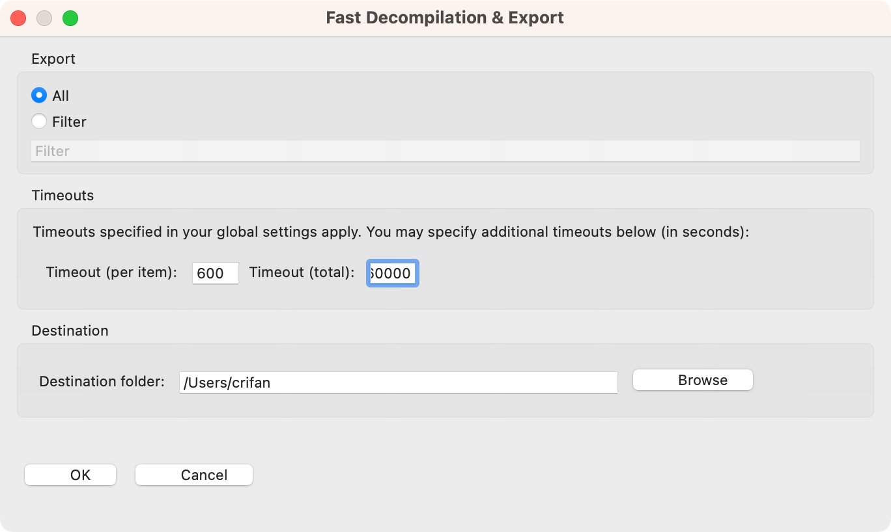
- 比如
最后会卡死和多次的反编译输出结果不稳定
在批量反编译全部代码期间，遇到一些问题：
- 反编译到最后进度95%左右时，会卡死
- 先后遇到多次，都是一样的问题：最后到
95.3、95.4左右的进度后，就卡死了- 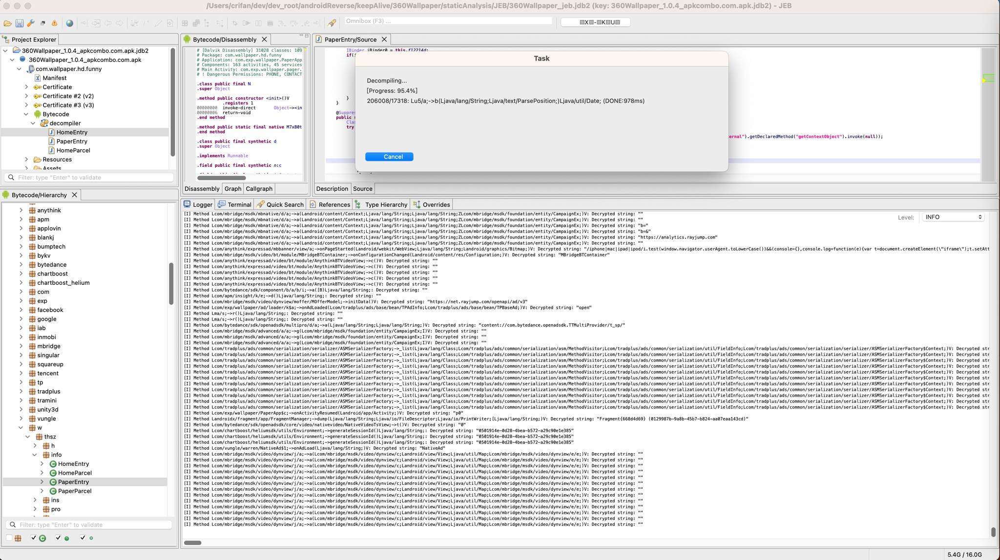
- 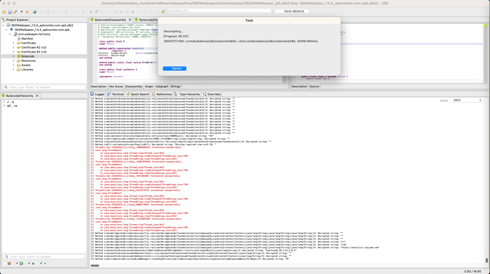
- 如果要继续等待：估计永远没有结果
- 之前等待了足够长时间：几十分钟，仍然没有任何进度更新
- 最后只能去：点击
Cancel去取消 - 之后即可正常继续去保存和导出已反编译出的所有java代码
- 先后遇到多次，都是一样的问题：最后到
- 多次（2次）反编译的结果，内容不一致=输出结果不稳定
- 专门测试了2次
- 一次最终反编译总数是：
206008 - 另一次最终反编译总数是：
206007
- 一次最终反编译总数是：
- 发现前后反编译出的java代码，不一致
- 总体上反编译的内容的效果，算是各有优劣
- 有时候是
206007的版本更好点- 举例
- 此处还原了
System.getenv("PATH")的逻辑，而不是输出所有返回的结果的列表- 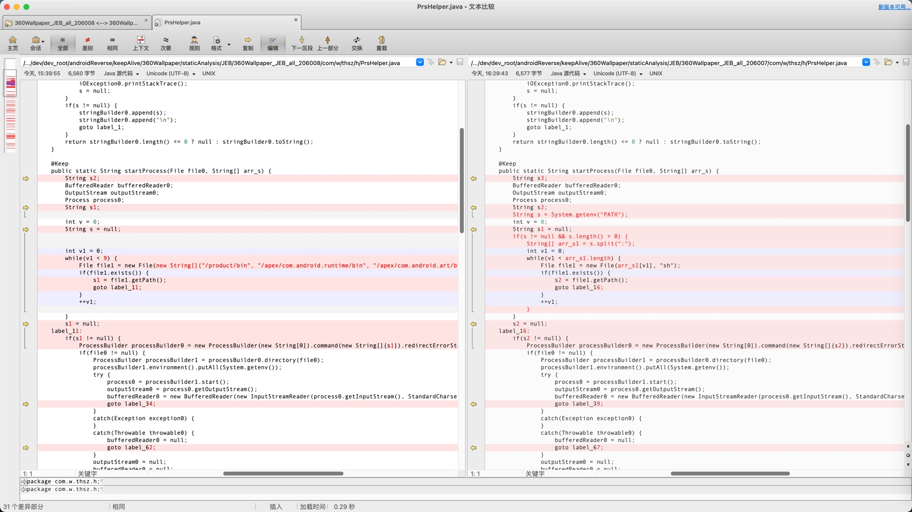
206007版本相关代码String s = System.getenv("PATH"); int v = 0; String s1 = null; if(s != null && s.length() > 0) { String[] arr_s1 = s.split(":"); int v1 = 0; while(v1 < arr_s1.length) { File file1 = new File(arr_s1[v1], "sh"); if(file1.exists()) { s2 = file1.getPath(); goto label_16; } ++v1; } }206008版本相关代码String s1; int v = 0; String s = null; int v1 = 0; while(v1 < 9) { File file1 = new File(new String[]{"/product/bin", "/apex/com.android.runtime/bin", "/apex/com.android.art/bin", "/system_ext/bin", "/system/bin", "/system/xbin", "/odm/bin", "/vendor/bin", "/vendor/xbin"}[v1], "sh"); if(file1.exists()) { s1 = file1.getPath(); goto label_11; } ++v1; }
- 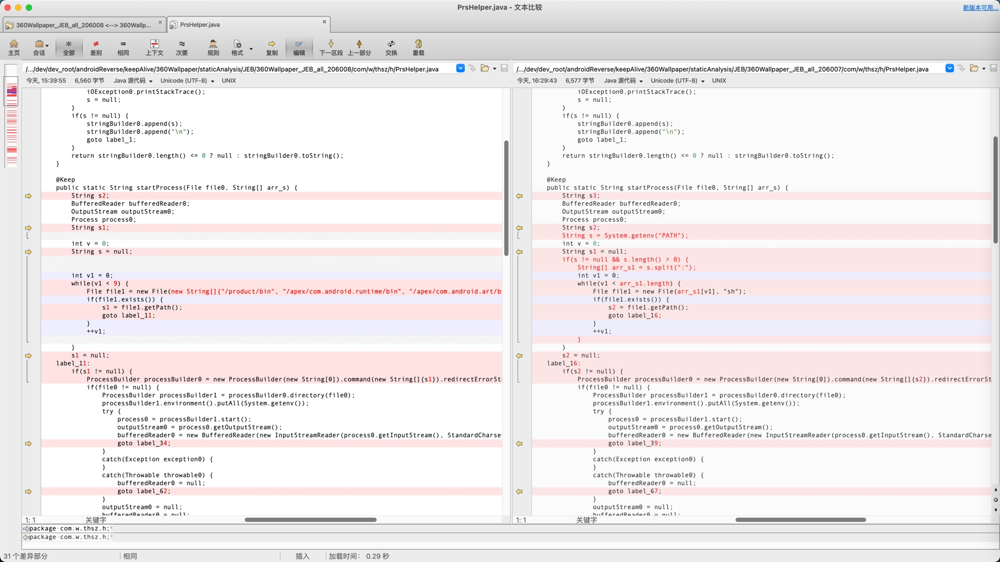
- 此处还原了
- 举例
- （个别）加密字符串被自动解密还原成原始字符串了
- 注：不论哪个版本，其实绝大多数加密字符串，都是已经被解密还原的。此处只是个别字符串是否被解密还原，有区别
206008版本更好点：206008自动解密还原了，而206007没有- 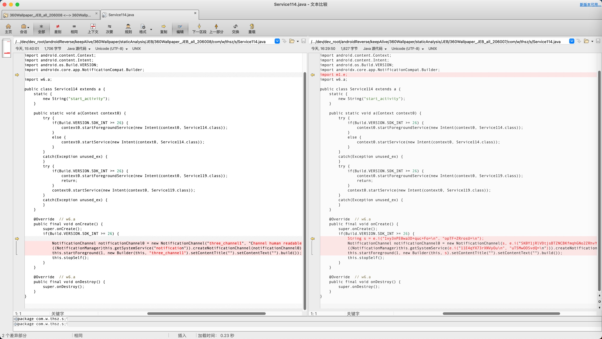
206007版本更好点：206007自动解密还原了，而206008没有- 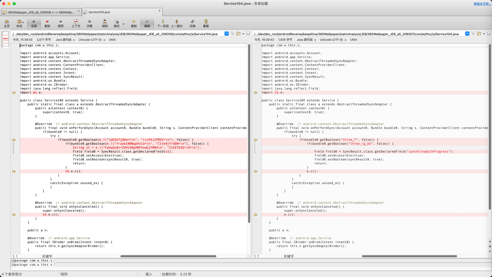
- 有时候是
- 总体上反编译的内容的效果，算是各有优劣
- 专门测试了2次
然后只能根据自己的实际情况，决定保留哪份结果。
或者实在不行，再多弄几次代码的全部反编译，对比找到相对最优的结果。
总之对于反编译结果最后卡死，以及每次输出结果不一致不稳定，还是有点麻烦的。
OOM内存崩溃问题：java.lang.OutOfMemoryError Compressed class space
- 现象
- 用JEB反编译抖音，导出全部源码时，最后报错：
[C] Thread[main,5,main] terminated unexpectedly: [C] java.lang.OutOfMemoryError: Compressed class space- 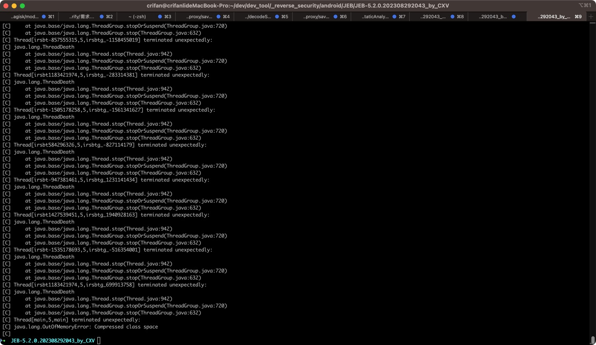
- 用JEB反编译抖音，导出全部源码时，最后报错：
- 原因：抖音内部代码量太大，反编译全部源码所要消耗资源太多，导致默认的
CompressedClassSpaceSize=1G，不够用，从而造成此处报错，Compressed class space出现OOM内存崩溃不够用的问题 - 解决办法：增大
CompressedClassSpaceSize的大小 - 具体步骤：
- 先要确认：
CompressedClassSpaceSize应该设置为多大的值- 此处
CompressedClassSpaceSize的范围是：最小是1048576=1M，最大是3221225472=3G，所以此处设置为最大的3G
- 此处
- 再去设置参数
- 此处JEB的Mac启动脚本：
/Users/crifan/dev/dev_tool/_reverse_security/android/JEB/JEB-5.2.0.202308292043_by_CXV/jeb_macos.sh中JVMOPT="-XX:+UseCompressedClassPointers -XX:+UseCompressedOops -XX:CompressedClassSpaceSize=3G -Xss4M -Xmx42G"- 参数含义解释
-XX:+UseCompressedClassPointers- （默认其实已开启，但是此处确保的确）开启
UseCompressedClassPointers
- （默认其实已开启，但是此处确保的确）开启
-XX:+UseCompressedOops- （默认其实已开启，但是此处确保的确）开启
UseCompressedOops
- （默认其实已开启，但是此处确保的确）开启
-XX:CompressedClassSpaceSize=3G- 设置
CompressedClassSpaceSize为3G- 注：默认大小是1G
- 设置
-Xss4M- ==
-XX:ThreadStackSize=4M - 含义：每个线程的堆栈大小：4MB
- ==
-Xmx42G- 最大堆栈内存：
42G
- 最大堆栈内存：
- 参数含义解释
- 此处JEB的Mac启动脚本：
- 先要确认：
从而使得CompressedClassSpaceSize的空间足够大，可以避免最后反编译导出全部源码时，CompressedClassSpaceSize空间超过最大大小，就不会报java.lang.OutOfMemoryError Compressed class space的错了。